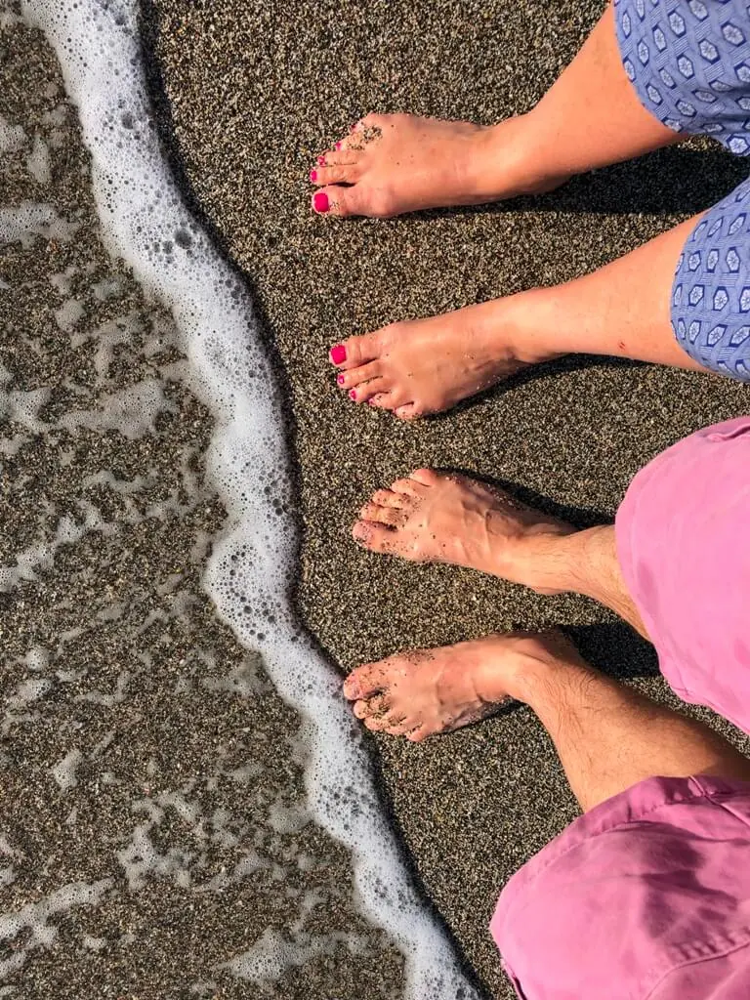

Embarrassing Feet
We find it such a shame that people get embarrassed by their feet. We see 1,000’s of feet every year, none of which are embarrassing feet to us. We totally understand that a lot of our patients find their feet embarrassing for one reason or another, but rest assured we have seen it all before; very little if anything you have hiding in your socks is going to shock us.
 People are often embarrassed by
People are often embarrassed by
- Smelly feet
- Uncared for feet
- Infected feet
- Ugly looking feet
- Fungal infection of toenails or skin on feet
Smelly Feet
Smell comes near the top of the list of embarrassing feet issues. Rest assured it is incredibly common. So if you are suffering with foot odour then don’t worry, you are not alone; there are things that we can do to help you. We see smelly feet every day of the week, they don’t bother us, we are just on a mission to help you get rid of this embarrassment.
And, lucky me, I don’t really have much of a sense of smell so it really won’t bother me at all. Come and get that sorted super fast.
Uncared for Feet
Sometime when we don’t know what to do, we just hide from the issue. That can happen with our feet too.
Our feet are a long way from our eyes and as we get older, a long way from our hands. So often, as we age, caring for our feet can become difficult. Lots of people become embarrassed by their inability to care for their own feet.
Please, please, please do not be embarrassed by this. That is why we are here, we love to help you when you can’t help yourself. Who doesn’t enjoy a little bit of TLC and pampering?
We have seen feet where the nails have not been cut for years and have grown round underneath the feet. We have seen callous and hard skin that has got so thick it has cracked and started bleeding. We have seen thick toenails, ugly feet, bunions and fungal toenails.
So please don’t ever be embarrassed to come and see us if you are struggling to care for your own feet. We can help you live a much more comfortable life, free of that embarrassment.
Infected Feet

Patients with infections like verruca’s or athletes foot are often very embarrassed by their feet and reluctant to get them out in public. This can really impact on their quality of life as it can limit exercise like swimming or leisure activities like going to a spa or walking on the beach.Foot infections can be really easy to pick up, especially in communal sports facilities where you are often walking barefoot, so pleased don’t be embarrassed.
Whilst verrucas can sometimes be stubborn and quite resistant to treatment, there is usually a solution for people suffering with these. We have a range of treatments and advice we can use to help your feet get free of these and other infections fairly quickly.
Ugly Feet
Many of our patients apologise when they take off their shoes and socks saying that their feet are ugly. We’ve even had patients who have been reluctant to go on holiday because they will have to wear sandals and then people will see their ugly, embarrassing feet.
Well, firstly, there is nothing that you can show us that will shock us, we’ve seen it all before. Secondly, there are often fairly quick solutions to the underlying problems that are causing you the embarrassment.
Things that cause people to tell us they have ugly feet range from thick or crumbly toenails, big verrucas, prominent veins, hard cracked skin or bent toes and bulging joints. Don’t worry, we don’t look at your feet from the same angle as you do; we see feet we can fix.
Now the bent toes and bulging joints are a bit trickier to resolve but everything else we can help you with easily.
So if you feel your embarrassing feet are holding you back, causing you pain and limiting the activities you can do each day, please don’t be embarrassed to come and see us as we probably have a solution for you. If we can’t help you we will be able to refer you on to another healthcare professional who should be able to help.
If you would like to talk to us about your embarrassing feet please give us a call and let’s see how we can help you.
[scriptless]